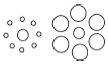
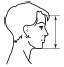
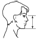
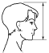
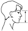
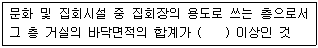
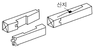

실내건축산업기사 (2015-05-31 기출문제)
1과목: 실내디자인론
1. 실내공간의 용도를 달리하여 보수(Renovation)할 경우 실내디자이너가 직접 분석해야 하는 사항과 가장 거리가 먼 것은?
- 기존건물의 기초상태
- 천장고와 내부의 상태
- 기존건물의 법적 용도
- 구조형식과 재료마감상태
(정답률: 67%)

2. 실내디자인의 대상 영역에 속하지 않는 것은?
- 주택의 거실디자인
- 호텔의 객실디자인
- 아파트의 외벽디자인
- 항공기의 객석디자인
(정답률: 78%)
3. 노인 침실 계획에 관한 설명으로 옳지 않은 것은?
- 일조량이 충분하도록 남향에 배치한다.
- 식당이나 화장실, 욕실 등에 가깝게 배치한다.
- 바닥에 단 차이를 두어 공간에 변화를 주는 것이 바람직하다.
- 소외감을 갖지 않도록 가족공동공간과의 연결성에 주의한다.
(정답률: 83%)
4. 실내디자인에서 장식물(accessories)에 관한 설명으로 옳지 않은 것은?
- 장식물에는 화분, 용기, 직물류, 예술품 등이 있다.
- 모든 장식물은 기능성이 부가되면 장식성이 반감된다.
- 장식물은 실내공간의 분위기를 생기 있게 하는 역할을 한다.
- 미적이나 기능적인 면에서는 필수적이지는 않지만 강조하고 싶은 요소를 보완해 주는 물건이다.
(정답률: 80%)
5. 형태의 크기, 방향 및 색상의 점차적인 변화로 생기는 리듬감을 무엇이라 하는가?
- 점이(gradation)
- 변이(transition)
- 반복(repetition)
- 대립(opposition)
(정답률: 62%)
6. 오피스 랜드스케이프(office landscape)의 구성요소와 가장 관계가 먼 것은?
- 식물
- 가구
- 낮은 파티션
- 고정 칸막이
(정답률: 69%)
7. 실내디자인의 요소에 관한 설명으로 옳지 않은 것은?
- 디자인에서의 형태는 점, 선, 면, 입체로 구성되어 있다.
- 벽면, 바닥면, 문, 창 등은 모두 실내의 면적 요소이다.
- 수직선이 강조된 실내에서는 아늑하고 안정감이 있으며 평온한 분위기를 느낄 수 있다.
- 실내 공간에서의 선은 상대적으로 가느다란 형태를 나타내므로 폭을 갖는 창틀이나 부피를 갖는 기둥도 선적 요소이다.
(정답률: 75%)
8. 조명기구를 선택할 때 고려하여야 할 조명의 4요소가 올바르게 나열된 것은?
- 명도, 대비, 조도, 광도
- 명도, 대비, 눈부심, 광도
- 명도, 대비, 크기, 움직임
- 명도, 광도, 조도, 연색성
(정답률: 47%)
9. 실내 공간을 구성하는 기본요소에 관한 설명으로 옳은 것은?
- 공간의 분할 요소로는 수직적 요소만이 사용된다.
- 바닥은 인체와 항상 접촉하므로 안정성이 고려되어야 한다.
- 천장은 시각적인 효과보다 촉각적 효과를 더 크게 고려하여야 한다.
- 공간의 영역을 상징적으로 분할하는 벽체의 최대 높이는 180cm이다.
(정답률: 71%)
10. 다음 중 가장 최소의 공간을 차지하는 계단 형식은?
- 나선계단
- 직선계단
- U형 꺽인계단
- L형 꺽인계단
(정답률: 72%)
11. 일반적으로 주거공간 계획에서 동선처리의 분기점이 되는 곳은?
- 침실
- 거실
- 식당
- 다용도실
(정답률: 80%)
12. 피보나치 수열에 관한 설명으로 옳지 않은 것은?
- 디자인 조형의 비례에 이용된다.
- 1, 2, 3, 5, 8, 13, 21…의 수열을 말한다.
- 황금비와는 전혀 다른 비례를 나타낸다.
- 13세기 초 이탈리아의 수학자인 피보나치가 발견한 수열이다.
(정답률: 68%)
13. 게슈탈트 심리학에서 인간의 지각원리와 관련하여 설명한 그룹핑의 법칙에 속하지 않는 것은?
- 유사성
- 폐쇄성
- 단순성
- 연속성
(정답률: 50%)
14. 아일랜드형 부엌에 관한 설명으로 옳지 않은 것은?
- 부엌의 크기에 관계없이 적용 가능하다.
- 개방성이 큰 만큼 부엌의 청결과 유지관리가 중요하다.
- 가족 구성원 모두가 부엌일에 참여하는 것을 유도할 수 있다.
- 부엌의 작업대가 식당이나 거실 등으로 개방된 형태의 부엌이다.
(정답률: 81%)
15. 디자인의 원리 중 대칭에 관한 설명으로 옳지 않은 것은?
- 이동대칭은 형태가 하나의 축을 중심으로 겹쳐지는 대칭이다.
- 방사대칭은 정점으로부터 확산되거나 집중된 양상을 보인다.
- 확대대칭은 형태가 일정한 비율로 확대되어 이루어진 대칭이다.
- 역대칭은 형태를 180°로 회전하여 상호의 형태가 반대로 되는 대칭이다.
(정답률: 65%)
16. 실내디자인 프로세스를 기획, 설계, 시공, 사용 후 평가단계의 4단계로 구분할 때, 디자인의 의도와 고객이 추구하는 방향에 맞추어 대상 공간에 대한 디자인을 도면으로 제시하는 단계는?
- 기획단계
- 설계단계
- 시공단계
- 사용 후 평가단계
(정답률: 63%)
17. 다음 중 대형 업무용 빌딩에서 공적인 문화공간의 역할을 담당하기에 가장 적절한 공간은?
- 로비 공간
- 회의실 공간
- 직원 라운지
- 비즈니스센터
(정답률: 61%)
18. 전시공간에서 천장의 처리에 관한 설명으로 옳지 않은 것은?
- 천장 마감재는 흡음 성능이 높은 것이 요구된다.
- 시선을 집중시키기 위해 강한 색채를 사용한다.
- 조명기구, 공조설비, 화재경보기 등 제반 설비를 설치한다.
- 이동스크린이나 전시물을 매달 수 있는 시설을 설치한다.
(정답률: 77%)
19. 일반적으로 목재와 같은 자연적인 재료의 질감이 주는 느낌은?
- 친근감
- 차가움
- 세련됨
- 현대적임
(정답률: 79%)
20. 소파 및 의자에 관한 설명으로 옳지 않은 것은?
- 스툴은 등받이와 팔걸이가 없는 형태의 보조 의자이다.
- 2인용 소파는 암체어라고 하며 3인용 이상은 미팅시트라 한다.
- 세티는 동일한 두 개의 의자를 나란히 합해 2인이 앉을 수 있도록 한 것이다.
- 카우치는 고대 로마시대 음식물을 먹거나 잠을 자기위해 사용했던 긴 의자이다.
(정답률: 60%)
2과목: 색채 및 인간공학
21. 다음 중 동작경제의 원칙과 가장 거리가 먼 것은?
- 두 팔은 서로 같은 방향의 비대칭적으로 움직인다.
- 두 손의 동작은 동시에 시작하고, 동시에 끝나도록 한다.
- 손의 동작은 완만하게 연속적인 동작이 되도록 한다.
- 휴식시간을 제외하고는 양손이 같이 쉬지 않도록 한다.
(정답률: 56%)
22. 다음 그림과 같이 가운데 위치한 두 원의 크기는 동일할 때 나타나는 착시 현상을 무엇이라 하는가?

- 분할의 착시
- 만곡의 착시
- 대소의 착시
- 각도의 착시
(정답률: 79%)
23. 다음 중 인간공학에 관한 설명으로 가장 적절하지 않은 것은?
- 단일 학문으로서 깊이 있는 분야이므로 관련된 다른 학문과는 관련지을 수 없는 독립된 분야이다.
- 체계적으로 인간의 특성에 관한 정보를 연구하고 이들의 정보를 제품 및 환경 설계에 이용하고자 노력하는 학문이다.
- 인간이 사용하는 제품이나 환경을 설계하는데 인간의 생리적, 심리적인 면에서의 특성이나 한계점을 체계적으로 응용한다.
- 인간이 사용하는 제품이나 환경을 설계하는데 인간의 특성에 관한 정보를 응용함으로써 안전성, 효율성을 제고하고자 하는 학문이다.
(정답률: 75%)
24. 다음 중 한국인 인체치수조사 사업에 있어 인체치수의 기준 중 "얼굴수직길이"를 올바르게 나타낸 것은?




(정답률: 43%)
25. 다음 중 기계장치의 동작, 변화과정이나 결과, 환경조건 등의 변동에 관한 정보를 인간이 정확하고 신속하게 지각할 수 있게 하기 위한 연구로 가장 적합한 것은?
- 표시방식의 연구
- 제어방식의 연구
- 공구의 조건에 관한 연구
- 인간의 자질능력의 변이에 관한 연구
(정답률: 59%)
26. 다음 중 수치를 정확히 읽어야 할 경우에 가장 적합한 표시장치의 형태는?
- 동침형 표시장치
- 동목형 표시장치
- 계수형 표시장치
- 수직-수평형 표시장치
(정답률: 68%)
27. 다음 중 통화이해도를 나타내는 방법으로 적절하지 않은 것은?
- 명료도 지수
- 통화 간섭 수준
- 이해도 점수
- 주파수 분포 지수
(정답률: 50%)
28. 군인들이 다리를 건널 때는 다리의 붕괴를 방지하기 위하여 발을 맞추지 않는다. 이는 다음 중 어떠한 현상과 관련이 있는가?
- 감쇠(attenuation)
- 공명(resonance)
- 관성(inertia)
- 댐핑(damping)
(정답률: 65%)
29. 다음 중 신체 부위의 동작유형과 그 사례가 올바르게 연결된 것은?
- 굴곡(flexion) : 굽혀있는 팔꿈치를 펴는 동작
- 신전(extension) : 완전히 펴져 있는 팔꿈치를 굽히는 동작
- 내전(adduction) : 아래로 내린 팔을 옆으로 수평이 되도록 드는 동작
- 회외(supination) : 팔을 아래로 내린 상태에서 손바닥을 전방으로 한 후 외측으로 돌리는 동작
(정답률: 50%)
30. 다음 중 점광원에서 어떤 물체나 표면에 도달하는 빛의 단위면적당 밀도로 빛을 받는 면의 밝기를 나타내는 것은?
- 휘도
- 광도
- 조도
- 명도
(정답률: 51%)
31. 빨간 사과를 태양광선 아래에서 보았을 때와 백열등 아래에서 보았을 때 빨간색은 동일하게 지각되는데 이 현상을 무엇이라고 하는가?
- 명순응
- 대비현상
- 항상성
- 연색성
(정답률: 67%)
32. 헤링(E.Hering)의 색각이론 중 이화작용(dissimilation)과 관계가 있는 색은?
- 백색(white)
- 녹색(green)
- 청색(blue)
- 흑색(black)
(정답률: 49%)
33. 우리 눈으로 지각할 수 있는 빛을 호칭하는 가장 적당한 말은?
- 가시광선
- 적외선
- X선
- 자외선
(정답률: 70%)
34. 다음 중 가장 큰 팽창색은?
- 고명도, 저채도, 한색계의 색
- 저명도, 고채도, 난색계의 색
- 고명도, 고채도, 난색계의 색
- 저명도, 고채도, 한색계의 색
(정답률: 73%)
35. 먼셀 표색계의 특징에 관한 설명 중 틀린 것은?
- 명도 5를 중간 명도로 한다.
- 실제 색입체에서 N9.5는 흰색이다.
- R과 Y의 중간색상은 O로 표시한다.
- 노랑의 순색은 5Y 8/14이다.
(정답률: 56%)
36. 먼셀의 색상환에서 PB는 무슨 색인가?
- 주황
- 청록
- 자주
- 남색
(정답률: 52%)
37. 검정바탕 위의 회색이 흰 바탕 위의 같은 회색보다 밝게 보이는 현상은?
- 명도대비
- 채도대비
- 색상대비
- 보색대비
(정답률: 67%)
38. 빛의 성질에 대한 설명 중 틀린 것은?
- 빛은 전자파의 일종이다.
- 빛은 파장에 따라 서로 다른 색감을 일으킨다.
- 장파장은 굴절률이 크며 산란하기 쉽니다.
- 빛은 간섭, 회절 현상 등을 보인다.
(정답률: 60%)
39. 교통기관의 색채계획에 관한 일반적인 기준 중 가장 타당성이 낮은 것은?
- 내부는 밝게 처리하여 승객에게 쾌적한 분위기를 만들어준다.
- 출입이 잦은 부분에는 더러움이 크게 부각되지 않도록 색을 사용한다.
- 차량이 클수록 쉬운 인지를 위하여 수축색을 사용하여야 한다.
- 운전실 주위에는 반사량이 많은 색의 사용을 피한다.
(정답률: 75%)
40. 가산혼합에 대한 설명으로 틀린 것은?(오류 신고가 접수된 문제입니다. 반드시 정답과 해설을 확인하시기 바랍니다.)
- 가산혼합의 1차색은 감산혼합의 2차색이다.
- 보색을 섞으면 어두운 회색이 된다.
- 색은 섞을수록 맑아진다.
- 기본색은 빨강, 녹색, 파랑이다.
(정답률: 44%)
3과목: 건축재료
41. 합판에 대한 설명으로 옳은 것은?
- 얇은 판을 섬유방향이 서로 평행하도록 짝수로 적층하면서 접착시킨 판을 말한다.
- 함수율 변화에 의한 신축변형이 크며 방향성이 있다.
- 곡면가공을 하면 균열이 쉽게 발생한다.
- 표면가공법으로 흡음효과를 낼 수가 있고 의장적 효과도 높일 수 있다.
(정답률: 48%)
42. 한수석(寒水石, 백회석)의 주 용도는?
- 테라코타 제조용
- 콘크리트 골재용
- 인조석 바름의 종석용
- 내화벽돌 제조용
(정답률: 56%)
43. 창호 철물로서 도어체크를 달 수 있는 문은?
- 미닫이문
- 여닫이문
- 접이문
- 미서기문
(정답률: 67%)
44. 다음 석재 중 압축강도가 일반적으로 가장 큰 것은?
- 화강암
- 사문암
- 사암
- 응회암
(정답률: 70%)
45. 화재시 개구부에서의 연소(延燒)를 방지하는 효과가 있는 유리는?
- 망입판유리
- 자외선투과유리
- 열선흡수유리
- 열선반사유리
(정답률: 56%)
46. 블론 아스팔트의 성능을 개량하기 위해 동식물성 유지와 광물질 분말을 혼입하여 제작한 것은?
- 아스팔트 프라이머
- 아스팔트 컴파운드
- 아스팔트 코팅
- 아스팔트 에멀젼
(정답률: 50%)
47. 불림하거나 담금질한 강을 다시 200~600℃로 가열한 후 공기 중에서 냉각하는 처리를 말하며, 내부응력을 제거하며 연성과 인성을 크게 하기 위해 실시하는 것은?
- 뜨임질
- 압출
- 중합
- 단조
(정답률: 74%)
48. 시멘트 제조시 클링커(clinker)에 석고를 첨가하는 주된 이유는?
- 조기강도의 증진
- 응결속도의 조절
- 시멘트 색의 조절
- 내약품성의 증대
(정답률: 63%)
49. 건축용 각종 금속재료 및 제품에 관한 설명 중 틀린것은?
- 구리는 화장실 주위와 같이 암모니아가 있는 장소나, 시멘트, 콘크리트 등 알칼리에 접하는 경우에는 빨리 부식하기 때문에 주의해야 한다.
- 납은 방사선의 투과도가 낮아 건축에서 방사선 차폐재료로 사용된다.
- 알루미늄은 대기 중에서는 부식이 쉽게 일어나지만 알칼리나 해수에는 강하다.
- 니켈은 전연성이 풍부하고 내식성이 크며 아름다운 청백색 광택이 있어 공기 중 또는 수중에서 색이 거의 변하지 않는다.
(정답률: 70%)
50. 실링재가 갖추어야 할 조건에 대한 설명으로 틀린 것은?
- 기밀성이 우수해야 한다.
- 부재와 밀착성이 양호해야 한다.
- 줄눈의 여러 가지 움직임에 추종하지 않고 저항하는 고정성이 우수해야 한다.
- 내구성이 우수해야 한다.
(정답률: 51%)
51. 목재의 강도에 관한 설명 중 틀린 것은?
- 함수율이 높을수록 강도가 크다.
- 심재가 변재보다 강도가 크다.
- 옹이가 많은 것은 강도가 작다.
- 추재는 일반적으로 춘재보다 강도가 크다.
(정답률: 64%)
52. 다음 방수공법 중 멤브레인 방수공법이 아닌 것은?
- 아스팔트 방수
- 시트 방수
- 도막 방수
- 무기질계 침투방수
(정답률: 51%)
53. 건축재료로서 사용되는 합성수지의 일반적인 특성으로 옳은 것은?
- 흡수성과 투수성이 적다.
- 내열성, 내화성이 크다.
- 강성이 크고 탄성계수가 강재보다 크다.
- 마모가 크고 탄력성이 작다.
(정답률: 31%)
54. 단열재가 갖추어야 할 조건으로 틀린 것은?
- 열전도율이 낮을 것
- 비중이 클 것
- 흡수율이 낮을 것
- 내화성이 좋을 것
(정답률: 68%)
55. 목재에 관한 설명 중 틀린 것은?
- 구조재로서 비강도가 크고 가공성이 좋다는 장점이 있다.
- 목재의 합유수분은 그 존재 상태에 따라 자유수와 결합수로 대별된다.
- 섬유포화점 이상의 함수 상태에서는 함수율의 증감에도 불구하고 신축을 일으키지 않는다.
- 응력의 방향이 섬유에 평행할 경우 목재의 압축강도가 인장강도보다 크다.
(정답률: 54%)
56. 탄소강의 성질에 대한 설명으로 옳은 것은?
- 합금강에 비해 강도와 경도가 크다.
- 보통 저탄소강은 철근이나 강판을 만드는데 쓰인다.
- 열처리를 해도 성질의 변화가 없다.
- 탄소함유량이 많을수록 강도는 지속적으로 커진다.
(정답률: 39%)
57. 콘크리트의 골재시험과 관계없는 것은?
- 단위용적질량 시험
- 안정성 시험
- 체가름 시험
- 크리프 시험
(정답률: 42%)
58. 보통 철선 또는 아연도금철선으로 마름모형, 갑옷형으로 만들며 시멘트 모르타르 바름 바탕에 사용되는 금속제품은?
- 와이어 라스(wire lath)
- 와이어 메시(wire mesh)
- 메탈 라스(metal lath)
- 익스팬디드 메탈(expanded metal)
(정답률: 53%)
59. 목재 및 기타 식물의 섬유질 소편에 합성수지 접착제를 도포하여 가열압착 성형한 판상제품의 명칭은?
- 플로어링블록
- 코르크판
- 파티클보드
- 연질섬유판
(정답률: 75%)
60. 투명도가 높아 유기유리라고도 불리우며 착색이 자유롭고 내충격강도가 크며 채광판, 도어판, 칸막이벽 제조에 적합한 합성수지는?
- 불소수지
- 아크릴수지
- 페놀수지
- 실리콘수지
(정답률: 80%)
4과목: 건축일반
61. 다음은 건축물의 3층 이상인 층으로서 직통계단 외에 그 층으로부터 지상으로 통하는 옥외피난계단을 설치하여야 하는 대상에 관한 내용이다. 빈칸에 알맞은 것은?

- 500m2
- 1000m2
- 1500m2
- 2000m2
(정답률: 62%)
62. 건축물에 설치하는 지하층의 비상탈출구 설치기준으로 옳은 것은?
- 비상탈출구의 유효너비는 0.5m 이상으로 할 것
- 출입구로부터 3m 이상 떨어진 곳에 설치할 것
- 비상탈출구의 문은 피난방향의 반대방향으로 열리도록 할 것
- 지하층의 바닥으로부터 비상탈출구의 아랫부분까지의 높이가 1.2m 이상이 되는 경우에는 벽체에 발판의 너비가 18cm 이상인 사다리를 설치할 것
(정답률: 56%)
63. 12층의 바닥면적이 1500m2인 건축물로서 자동식 소화설비를 설치한 경우 방화구획으로 나누어지는 바닥은 몇 개소인가? (단, 디자인과 평면계획은 고려치 않음)
- 1개소 이상
- 2개소 이상
- 3개소 이상
- 4개소 이상
(정답률: 59%)
64. 철골조 기둥(작은지름 25cm 이상)이 내화구조 기준에 부합하기 위해서 두께를 최소 7cm 이상을 보강해야 하는 재료에 해당되지 않는 것은?
- 콘크리트 블록
- 철망 모르타르
- 벽돌
- 석재
(정답률: 61%)
65. 목구조에서 각 부재의 접합부 및 벽체를 튼튼하게 하기 위하여 사용되는 부재와 관련 없는 것은?
- 귀잡이
- 버팀대
- 가새
- 장선
(정답률: 58%)
66. 조적식 구조의 벽에 설치하는 창, 출입구 등의 개구부 설치기준으로 틀린 것은?
- 각 층의 대린벽으로 구획된 각 벽에 있어서 개구부의 폭의 합계는 그 벽의 길이의 1/2 이하로 하여야 한다.
- 하나의 층에 있어서의 개구부와 그 바로 윗층에 있는 개구부와의 수직거리는 최소 900mm 이상으로 하여야한다.
- 폭이 1.8m를 넘는 개구부의 상부에는 철근콘크리트구조의 윗 인방을 설치하여야 한다.
- 조적식 구조인 내어민창 또는 내어쌓기창은 철골 또는 철근콘크리트로 보강하여야 한다.
(정답률: 52%)
67. 고딕(Gothic) 건축의 특징적 내용과 거리가 먼 것은?
- 그리스 십자형(Greek Cross) 평면
- 리브 볼트(Rib Vault)
- 장미창(Rose Window)
- 첨두형 아치(Pointed Arch)
(정답률: 53%)
68. 건축물에 설치하는 승용승강기 설치대수 산정에 직접적으로 관련 있는 것끼리 묶여진 것은?
- 용도 - 층수 - 각 층의 거실면적
- 용도 - 층수 - 높이
- 용도 - 높이 - 각 층의 거실면적
- 층수 - 높이 - 각 층의 거실면적
(정답률: 61%)
69. 건축물을 건축하거나 대수선하는 경우 해당 건축물의 건축주는 착공신고를 하는 때에 해당 건축물의 설계자로부터 구조안전의 확인 서류를 받아 허가권자에게 제출하여야 하는데 이에 해당하는 대상 건축물 기준으로 옳은 것은?
- 연면적이 300m2 이상인 건축물
- 처마높이가 6m 이상인 건축물
- 기둥과 기둥사이의 거리가 10m 이상인 건축물
- 높이가 10m 이상인 건축물
(정답률: 62%)
70. 다음 용어 중 철골구조와 가장 관계가 먼 것은?
- 인서트(insert)
- 사이드 앵글(side angle)
- 웨브 플레이트(web plate)
- 윙 플레이트(wing plate)
(정답률: 56%)
71. 한국의 궁궐건축을 최초 창건순서대로 옳게 나열한 것은?
- 경복궁 –창덕궁 –창경궁 - 경희궁
- 창덕궁 –경복궁 –경희궁 - 창경궁
- 창경궁 –경희궁 –창덕궁 –경복궁
- 경희궁 –창경궁 –창덕궁 –경복궁
(정답률: 58%)
72. 건축물의 바깥쪽으로 나가는 주된 출구 외에 보조출구 또는 비상구를 2개소 이상 설치하여야 하는 것은?
- 관람석의 바닥면적의 합계가 200m2 이상인 문화 및 집회시설 중 집회장
- 관람석의 바닥면적의 합계가 300m2 이상인 문화 및 집회시설 중 공연장
- 거실의 바닥면적의 합계가 400m2 이상인 장례식장
- 거실의 바닥면적의 합계가 500m2 이상인 위락시설
(정답률: 59%)
73. 다음 소방시설 중 소화설비에 속하지 않는 것은?
- 상수도소화용수설비
- 소화기
- 옥내소화전설비
- 스프링클러설비
(정답률: 75%)
74. 소방시설 설치ㆍ유지 및 안전관리에 관한 법령상 곧바로 지상으로 갈 수 있는 출입구가 있는 층으로 정의되는 것은?
- 무창층
- 피난층
- 지상층
- 피난안전구역
(정답률: 76%)
75. 주요구조부를 내화구조로 하여야 하는 건축물의 기준으로 틀린 것은?
- 문화 및 집회시설 중 전시장으로서 그 용도로 쓰이는 바닥면적 합계가 500m2 이상인 건축물
- 판매시설로서 그 용도로 쓰이는 바닥면적 합계가 500m2 이상인 건축물
- 창고시설로서 그 용도로 쓰이는 바닥면적 합계가 500m2 이상인 건축물
- 공장의 용도로 쓰는 건축물로서 그 용도로 쓰이는 바닥면적 합계가 500m2 이상인 건축물
(정답률: 53%)
76. 다음 중 비상방송설비를 설치하여야 하는 특정소방대상물이 아닌 것은? (단, 위험물 저장 및 처리시설 중 가스시설, 사람이 거주하지 않는 동물 및 식물관련시설, 지하가 중 터널, 축사 및 지하구는 제외)
- 50인 이상의 근로자가 작업하는 옥내작업장
- 연면적 3,500m2 이상인 것
- 지하층의 층수가 3층 이상인 것
- 지하층을 제외한 층수가 11층 이상인 것
(정답률: 59%)
77. 조적조에서 내력벽으로 둘러싸인 부분의 바닥면적은 최대 몇 m2이하로 하는가?
- 50m2
- 60m2
- 70m2
- 80m2
(정답률: 50%)
78. 아래 그림과 같은 목재의 이음의 종류는?

- 엇빗이음
- 겹침이음
- 엇걸이이음
- 긴촉이음
(정답률: 75%)
79. 호텔 각 실의 재료 중 방염성능기준 이상의 것으로 시공하지 않아도 되는 것은?
- 지하 1층 연회장의 무대용 합판
- 최상층 식당의 창문에 설치하는 커튼류
- 지상 1층 라운지의 전시용 합판
- 지상 객실의 화장대
(정답률: 75%)
80. 관계공무원에 의한 소방안전관리에 관한 특별조사의 항목에 해당하지 않는 것은?
- 특정소방대상물의 소방안전관리 업무 수행에 관한 사항
- 특정소방대상물의 소방계획서 이행에 관한 사항
- 특정소방대상물의 자체점검 및 정기점검 등에 관한사항
- 특정소방대상물의 소방안전관리자의 선임에 관한 사항
(정답률: 74%)